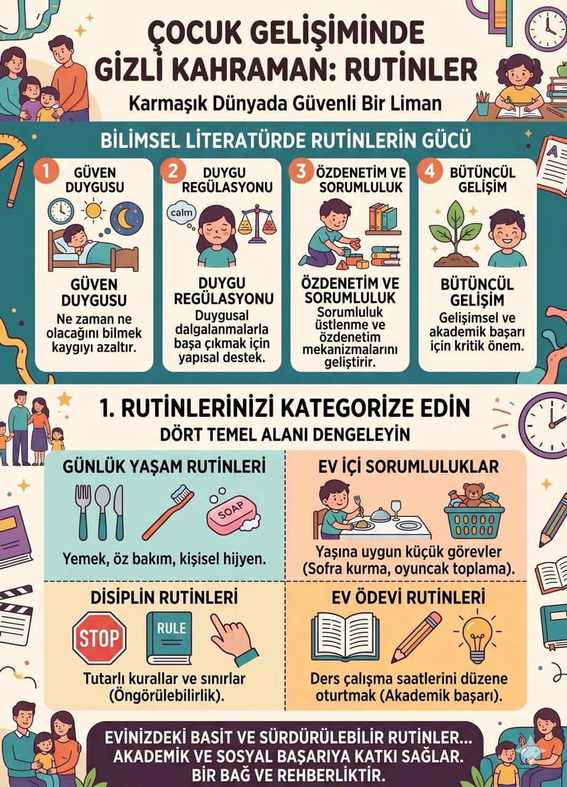

Rutinler

Kısa yanıt: Rutinler; yemek, uyku, oyun, öz bakım, ekran kullanımı ve ödev gibi günlük etkinliklerin belirli bir sıra ve öngörülebilirlik içinde tekrarlanmasıdır. Çocuğun gün içinde “Şimdi ne olacak?” sorusuna yanıt verir. Araştırmalar, düzenli ve çocuğun yaşına uygun rutinlerin bilişsel gelişim, öz düzenleme, sosyal-duygusal beceriler, akademik beceriler ve fiziksel sağlıkla olumlu yönde ilişkili olduğunu göstermektedir. Ancak rutin, katı bir program değil; çocuğun ve ailenin ihtiyaçlarına göre esneyebilen güvenli bir çerçevedir.
Çocuklarda rutin nedir?
Rutin, günlük yaşamda benzer zamanlarda veya benzer bir sırayla tekrarlanan davranışlar bütünüdür. Sabah hazırlanmak, yemekten önce elleri yıkamak, okuldan sonra dinlenip ödeve geçmek ve uyumadan önce kitap okumak birer rutin olabilir.
Rutin ile ritüel aynı şey değildir. Rutin, yapılması gereken işin düzenli biçimde gerçekleşmesini sağlar. Ritüel ise bu tekrara aile için özel bir anlam ve duygu katar. Her akşam diş fırçalamak bir rutin; ardından günün en güzel anını paylaşmak ise bir aile ritüeli olabilir.
Rutinler çocuk gelişimini nasıl destekler?
2023 yılında yayımlanan ve 170 araştırmayı kapsayan sistematik derleme, günlük rutinlerin çocukların bilişsel, sosyal-duygusal ve akademik gelişimiyle; öz düzenleme becerileriyle ve genel sağlık durumuyla çoğunlukla olumlu ilişkiler gösterdiğini bildirmektedir. Bulgular özellikle zorlayıcı yaşam koşullarında rutinlerin koruyucu bir yapı sunabileceğine işaret etmektedir. Bununla birlikte, araştırmaların önemli bir bölümü ilişkisel niteliktedir. Bu nedenle “rutin tek başına belirli bir sonucu kesin olarak doğurur” demek yerine, sağlıklı gelişimi destekleyen etkenlerden biri olduğunu söylemek daha doğrudur.
1. Belirsizliği azaltır ve güven duygusunu destekler
Çocuk sırada ne olacağını bildiğinde gün daha anlaşılır hâle gelir. Örneğin “oyuncakları toplama → pijamaları giyme → kitap okuma → uyku” sırasının her akşam benzer biçimde uygulanması, geçişi öngörülebilir kılar. Bu yapı özellikle değişikliklerden kolay etkilenen çocuklarda rahatlatıcı olabilir.
2. Öz düzenleme ve bağımsızlık için pratik alanı oluşturur
Öz düzenleme; çocuğun dikkatini, duygularını ve davranışlarını bulunduğu duruma göre yönetebilmesidir. Tekrarlanan adımlar zamanla dışarıdan verilen hatırlatmaların azalmasına yardımcı olabilir. Çocuk çantasını hazırlamayı, ekranı kapatıp başka bir etkinliğe geçmeyi veya uykuya hazırlanmayı adım adım öğrenir.
3. Sorumluluk ve günlük yaşam becerilerini geliştirir
Sofraya peçete koymak, kirli giysileri sepete atmak ya da ertesi günün çantasını kontrol etmek gibi yaşa uygun görevler, çocuğa aile yaşamına katkı sunduğunu hissettirir. Burada amaç kusursuzluk değil, beceriyi tekrar ederek öğrenmektir.
4. Uyku sürecini destekler
Araştırmalar, küçük çocuklarda tutarlı bir uyku öncesi rutinin daha erken yatma, daha kısa sürede uykuya dalma, daha az gece uyanması ve daha uzun uyku süresi gibi olumlu uyku sonuçlarıyla ilişkili olduğunu göstermektedir. Etkili bir uyku rutini genellikle kısa, sakin ve her gece benzer sırada ilerleyen etkinliklerden oluşur.
5. Aile içi iletişim için düzenli fırsatlar yaratır
Birlikte yemek hazırlamak, akşam yemeğinde gün hakkında konuşmak veya uyku öncesinde kitap okumak yalnızca günlük işleri düzenlemez; ebeveyn ile çocuk arasında tekrar eden temas alanları oluşturur. Rutinlerin ilişkiyi destekleyen yönü, yetişkinin sakin, ilgili ve tutarlı katılımıyla güçlenir.
Yaşa göre günlük rutin örnekleri
| Yaş dönemi | Uygun rutin örnekleri | Ebeveynin desteği |
|---|---|---|
| 0–2 yaş | Beslenme, alt değiştirme, banyo ve uyku öncesinde benzer sıra | Bebeğin açlık, yorgunluk ve rahatlama sinyallerini izleyin; saatten çok ritme odaklanın. |
| 3–5 yaş | Oyuncak toplama, el yıkama, giyinme, iki-üç adımlı uyku rutini | Resimli rutin kartları kullanın; iki sınırlı seçenek sunun. |
| 6–8 yaş | Okul çantası hazırlama, okul sonrası dinlenme, ödev ve oyun sırası | Kontrol listesini çocukla birlikte hazırlayın; başlangıçta hatırlatın, zamanla geri çekilin. |
| 9–12 yaş | Ders planlama, ekranı sonlandırma, kişisel bakım, ertesi güne hazırlanma | Çocuğu planlama sürecine katın; süreden çok sorumluluk ve denge üzerinde durun. |
Her çocuk aynı hızda öğrenmez. Dikkat, duyusal hassasiyet, dil becerileri, gelişimsel özellikler ve aile koşulları rutinin biçimini etkileyebilir.
Çocuğa rutin nasıl kazandırılır? 7 uygulanabilir adım
1. Önce tek bir zorlanma alanı seçin
Tüm günü aynı anda değiştirmeye çalışmayın. Sabah hazırlanma, ekranı kapatma veya uykuya geçiş gibi aileyi en çok zorlayan tek bir süreçle başlayın.
2. Rutini üç ila beş görünür adıma bölün
“Uyumaya hazırlan” gibi genel bir yönerge yerine “oyuncakları topla → pijamanı giy → dişini fırçala → kitabını seç” şeklinde somut bir sıra oluşturun. Küçük çocuklarda fotoğraf veya çizim kullanabilirsiniz.
3. Çocuğu planlamaya katın
Çocuğa sınırsız kontrol vermeden söz hakkı tanıyın: “Dişini hikâyeden önce mi, sonra mı fırçalamak istersin?” Çocuğun katılımı, rutini dışarıdan dayatılan bir kurala dönüştürmeden sahiplenmesini kolaylaştırabilir.
4. Geçişleri önceden haber verin
Özellikle oyun veya ekran gibi keyifli bir etkinliği sonlandırmak zor olabilir. “On dakika sonra kapanacak”, “Son bölümü bitirip kapatacağız” gibi kısa ve tutarlı uyarılar kullanın. Zamanlayıcı yardımcı olabilir; fakat ebeveyn iletişiminin yerini almamalıdır.
5. Hatırlatın, model olun ve aşamalı olarak geri çekilin
Çocuk yeni rutini hemen bağımsız sürdüremeyebilir. Önce birlikte yapın, sonra sözel ya da görsel ipucu verin, beceri geliştikçe yardımı azaltın. Bu süreç öğretmedir; yalnızca talimat vermek değildir.
6. Çabayı ve ilerlemeyi fark edin
“Aferin” demek yerine neyi başardığını belirtin: “Zamanlayıcı çalınca tableti kapattın ve kitabını seçtin.” Bu tür açıklayıcı geri bildirim, çocuğun hangi davranışın işe yaradığını anlamasını kolaylaştırır.
7. Rutini düzenli aralıklarla gözden geçirin
Okul saatleri, kardeşin doğumu, tatil veya gelişimsel gereksinimler değiştiğinde rutin de güncellenebilir. İşlemeyen bir rutini daha sert uygulamak yerine adımların fazla uzun, belirsiz veya çocuğun yaşına uygun olup olmadığını değerlendirin.
Rutinler katı olmalı mı?
Hayır. Sağlıklı rutinlerin temelinde tutarlılık vardır; değişmezlik değil. Rutin, aile yaşamını destekleyen bir iskele gibi çalışmalıdır. Özel günlerde, hastalıkta veya tatilde esneyebilir; sonrasında temel sıraya geri dönülebilir. Dakikası dakikasına uygulanan ve çocuğun ihtiyaçlarını görmezden gelen programlar, gelişimsel destekten çok çatışma yaratabilir.
Rutin oluştururken sık yapılan hatalar
- Aynı anda çok fazla rutini değiştirmek
- Çocuğa yaşına göre fazla sayıda veya belirsiz yönerge vermek
- Görsel planı hazırlayıp düzenli kullanmamak
- Yalnızca ödül veya ceza üzerinden ilerlemek
- Yetişkinlerin kendi aralarında farklı kurallar uygulaması
- Çocuğun yorgunluk, açlık, duyusal hassasiyet veya dikkat güçlüğünü “inat” olarak yorumlamak
- Birkaç günlük uygulamadan sonra sonuç beklemek
Ne zaman uzman desteği düşünülmeli?
Rutin değişiklikleri uzun süre ve belirgin düzeyde öfke, kaygı veya işlev kaybı oluşturuyorsa; uyku, beslenme, öz bakım, okul devamı ya da aile yaşamı ciddi biçimde etkileniyorsa bir çocuk gelişimi uzmanı veya ilgili sağlık uzmanından değerlendirme alınabilir. Amaç çocuğu “daha uyumlu” hâle getirmek değil, zorlanmanın altında yatan gelişimsel ve çevresel ihtiyaçları anlamaktır.
Sonuç
Rutinler çocukların yaşamını kusursuzlaştıran kurallar listesi değildir. Günün akışını anlaşılır kılan, becerilerin tekrar edilmesini sağlayan ve aile içinde düzenli bağ kurma fırsatları oluşturan esnek yapılardır. En etkili rutin; çocuğun yaşına uygun, az adımlı, görsel olarak anlaşılır, yetişkinler tarafından tutarlı biçimde desteklenen ve gerektiğinde değiştirilebilen rutindir.
Bugün başlamak için yalnızca bir geçiş anı seçin. Çocuğunuzla birlikte üç adımlı küçük bir plan hazırlayın ve bir hafta boyunca gözlemleyin: Hangi adım işe yaradı, hangi adımda daha fazla desteğe ihtiyaç oldu?
Sık sorulan sorular
Çocuğun bir rutine alışması ne kadar sürer?
Her çocuk ve her rutin için geçerli tek bir süre yoktur. Rutinin karmaşıklığı, çocuğun yaşı, gelişimsel özellikleri ve yetişkinlerin tutarlılığı süreci etkiler. Takvime odaklanmak yerine, çocuğun daha az yardımla adımları sürdürüp sürdüremediğini izlemek daha yararlıdır.
Rutin ile program arasındaki fark nedir?
Program daha çok etkinliğin saatini gösterir; rutin ise davranışların hangi sırayla gerçekleştiğini belirtir. “Saat 20.30’da uyku” bir program bilgisidir. “Pijama → diş fırçalama → kitap → ışıkları kapatma” ise uyku rutinidir.
Görsel rutin tablosu hangi yaşta kullanılabilir?
Fotoğraf ve basit resimlerden oluşan görsel diziler okul öncesi dönemden itibaren kullanılabilir. Okuma bilen çocuklarda kısa sözcükler ve kontrol listeleri eklenebilir. Görselin çocuğun anlayabileceği sadelikte olması yaştan daha önemlidir.
Çocuk rutine uymadığında ceza verilmeli mi?
Önce davranışın nedenini araştırmak daha işlevseldir. Adımlar belirsiz, uzun veya zor olabilir; çocuk yorgun olabilir ya da geçiş için desteğe ihtiyaç duyabilir. Rutini sadeleştirmek, önceden haber vermek, birlikte uygulamak ve açıklayıcı geri bildirim kullanmak çoğu zaman cezadan daha öğreticidir.
Tatilde rutinler bozulabilir mi?
Evet. Saatler değişse bile uyku öncesi adımlar, aile yemeği veya sabah hazırlanma sırası gibi birkaç “çapa rutin” korunabilir. Tatil sonrasında temel düzene kademeli dönüş yapılabilir.
Kaynaklar
- Selman, S. B., & Dilworth-Bart, J. E. (2023). *Routines and child development: A systematic review*. Journal of Family Theory & Review. https://doi.org/10.1111/jftr.12549
- Fiese, B. H., Tomcho, T. J., Douglas, M., Josephs, K., Poltrock, S., & Baker, T. (2002). *A review of 50 years of research on naturally occurring family routines and rituals: Cause for celebration?* Journal of Family Psychology, 16(4), 381–390. https://doi.org/10.1037/0893-3200.16.4.381
- Spagnola, M., & Fiese, B. H. (2007). *Family routines and rituals: A context for development in the lives of young children*. Infants & Young Children, 20(4), 284–299. https://doi.org/10.1097/01.IYC.0000290352.32170.5a
- Mindell, J. A., & Williamson, A. A. (2018). *Benefits of a bedtime routine in young children: Sleep, development, and beyond*. Sleep Medicine Reviews, 40, 93–108. https://doi.org/10.1016/j.smrv.2017.10.007
- American Academy of Pediatrics. (2024). *The Importance of Family Routines*. HealthyChildren.org.
---